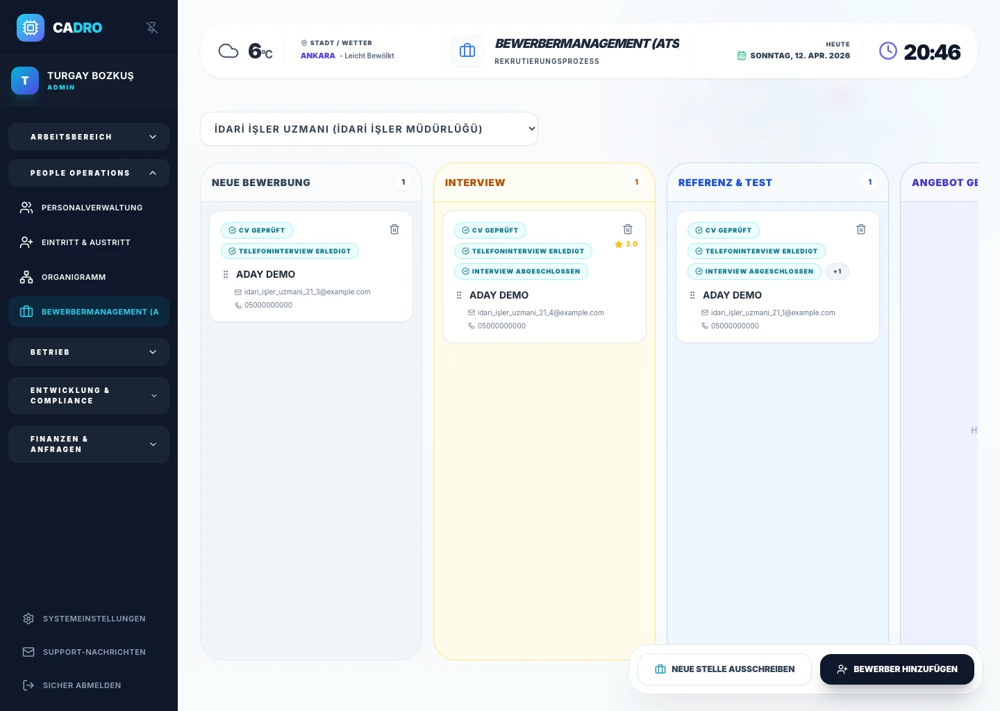

Kanban-Kandidaten-Board
Kandidaten per Drag & Drop von �?Neue Bewerbung“ bis �?Angebot“ verschieben. Wer sich in welcher Phase befindet, ist jederzeit sichtbar.

BEWERBERMANAGEMENT (ATS)
ATS (Bewerbermanagementsystem): Sammeln Sie alle Bewerbungen auf einem Bildschirm, optimieren Sie Ihre Interviewprozesse und machen Sie den gesamten Einstellungsprozess teams�bergreifend nachvollziehbar. CADRO ATS beschleunigt den Rekrutierungszyklus, erh�ht die Sichtbarkeit der Kandidaten und reduziert den manuellen Aufwand f�r HR-Teams.

In Hunderten von CVs aus verschiedenen Portalen den Überblick verlieren – und Interviewnotizen vergessen.
Alle Kandidaten in einem Pool sammeln und den Prozess per Kanban‑Board visualisieren.
Bis zu 40% kürzere Time‑to‑Hire und ein starkes Kandidatenerlebnis.
SO FUNKTIONIERT'S
Stelle mit Abteilung und Titel definieren. Mit einem Klick auf der Karriereseite veröffentlichen und aktiv/inaktiv steuern.
Sobald ein Lebenslauf hochgeladen wird, bewertet die KI Kommunikation, Fachkompetenz, kulturelle Passung und Motivation in 4 Dimensionen. Zusammenfassung sofort verfügbar.
Interview → Test → Referenz → Angebot: Kandidaten per Drag & Drop verschieben, mit Teamnotizen und HR-Scorecard anreichern.
Personalisierten PDF-Angebotsbrief senden. Ein Klick wandelt den Kandidaten in einen Mitarbeitereintrag um; Personalakte und Lohnbuchhaltung starten.
DAS ATS-MODUL
Kandidaten per Drag & Drop von �?Neue Bewerbung“ bis �?Angebot“ verschieben. Wer sich in welcher Phase befindet, ist jederzeit sichtbar.
Sobald ein Lebenslauf hochgeladen wird, bewertet die KI automatisch Kommunikation, Fachkompetenz, kulturelle Passung und Motivation in 4 Dimensionen.
Interviewende erfassen Stärken, Schwächen und Gesamteinschätzung für jeden Kandidaten. Bewertung in 4 Dimensionen: Kommunikation, Technik, Kultur, Motivation.
Personalisierten PDF-Angebotsbrief direkt aus dem System erstellen. Die Vorlage füllt sich automatisch mit Stellendetails — mit einem Klick versenden.
Badges wie �?Lebenslauf geprüft“, �?Telefonanruf“ und �?Interview abgeschlossen“ machen den Prozess transparent. Teamnotizen sammeln sich auf der Kandidatenkarte.
Abteilungsbezogene Stellenanzeigen erstellen und aktiv/inaktiv steuern. Alle Bewerbungen aus verschiedenen Kanälen landen in einem zentralen Pool.
NAHTLOSES ERLEBNIS
Sobald Sie einen Kandidaten als �?Eingestellt“ markieren, wird er automatisch in die Personalakte übertragen. Keine doppelten Eingaben – Onboarding startet sofort.
Zur Personalakte →
FAQ
Ein ATS digitalisiert den gesamten Recruiting‑Prozess, bündelt Bewerbungen in einem Pool und visualisiert die Phasen.
Ja. CVs und personenbezogene Daten werden mit Einwilligungsnachweisen und banküblicher Verschlüsselung sicher gespeichert.
Ja. Sie können CVs manuell hochladen oder Bewerber über Ihre Formulare direkt in CADRO erfassen.
BEREIT?
Wählen Sie Pro oder Enterprise und starten Sie sofort mit dem ATS‑Modul.